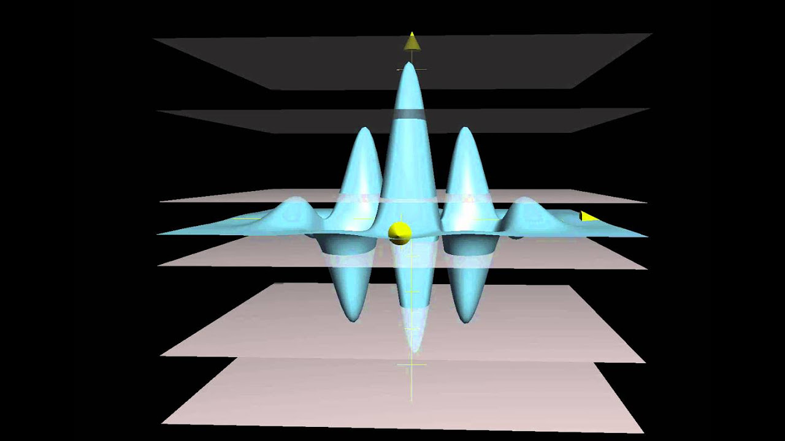

Concepts

Definition of a Multivariable Function:
A function of two variables is a rule that assigns a real number. f(x, y) to each pair of real numbers (x, y) in the domain of the function.
A function of two variables is a rule which defines a unique output, z = f(x, y), for every input pair of real numbers, (x, y), in a specified set of points D called the domain.
In the function: z= f(x,y) x & y are independent variables z is a dependent variable
Unless otherwise specified you can assume that the domain is the set of all points for which the equation is defined.
Example:
The domain of the function:
f(x,y)= x^2 + y^2
can be assumed to be all real numbers.
However the domain of:
f(x,y)= lnxy
is the set of all points (x,y) in the plane for which xy> 0.
This consists of all points in the first and third quadrants.
You can combine functions of several variables in the same ways as functions of single variables.
(f+/-g)(x,y)=f(x,y)+/-g(x,y)
(fg)(x,y)=f(x,y)g(x,y)
(f/g)(x,y)= f(x,y)/g(x,y)
Level Curves
The next topic that we should look at is that of level curves or contour curves.
The level curves of the function are two dimensional curves we get by setting , where k is any number.
So the equations of the level curves are .
Note that sometimes the equation will be in the form and in these cases the equations of the level curves are .
Describing Graphs of Multi-Variable Functions
Example : Identify the level curves of f(x,y)=(x2+y2)1/2. Sketch a few of them.
Re-Write:
f(x,y)=(x2+y2)1/2 as z=(x2+y2)1/2
Square both sides: z2= x2+y2
This function is a cone, which is given by the general formula for a cone: z2/c2=x2/b2+y2/b2So,
The function represents a cone, but only the upper have, since the square roots will only output positive numbers.
Note that this was not required for this problem.
It was done for the practice of identifying the surface and this may come in handy down the road.
Now on to the real problem. T
he level curves (or contour curves) for this surface are given by the equation are found by substituting: z=k.
In the case of our example this is,
k=(x2+y2)1/2 -----> k2= x2+y2
where k is any number.
So, in this case, the level curves are circles of radius k with center at the origin.
The graph is represented below.